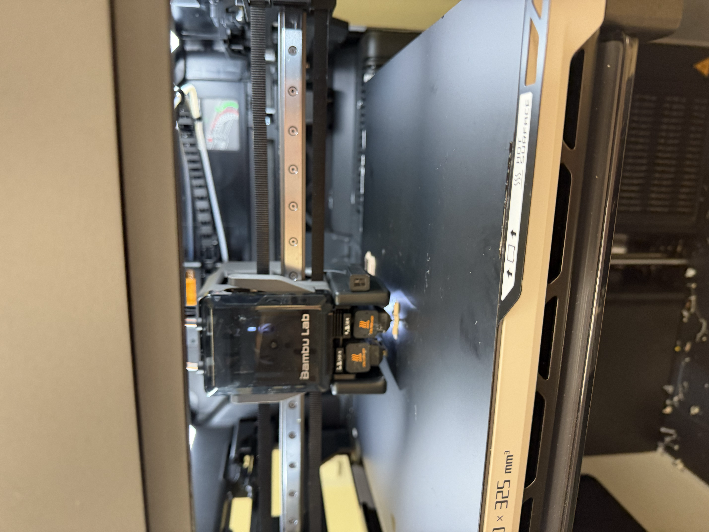

Week 5: 3D Printing
I made a ring! It's a little sun fidget guy :) a link to download a file
I did print the ring! Unfortunately, it did not work. The supports wound up being far larger than the actual ring, and the shard of plastic that was left over got trashed before I could take a picture. I went to my parents' house, where my dad has a printer, and I printed up another iteration, with a different design. It is a ring, which is exciting, but the thing doesn't spin.




I also tried (and failed) to do two scannings. I first tried to do sneakers. I tried two pairs (white converse then black hokas; i ragequit the convers), and my roommates politely turned a blind eye as I threw my clothes everywehre to rearrange my closet to hang up a singular shoe (you can see my try hard, ridiculous set ups below). Neither attempt worked very well, although the black hoka was slightly better than the white converse. I then tried to scan Roger (a stuffed hippo plush made by a friend). That also didn't fully work. By that point, my phone was ridiculously hot, so I decided they were good enough -- each one had had 300 photos, even after deleting all of the unconnected photos. No clue why Roger failed, but I'm pretty sure the shoes were poorly lit.
Roger Shoes =